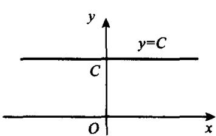
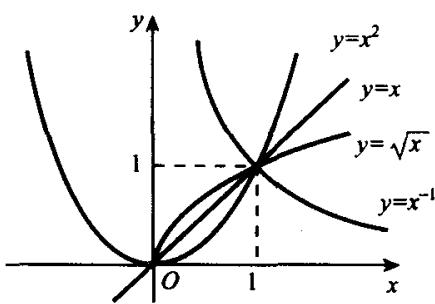
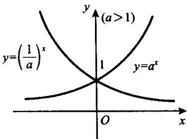
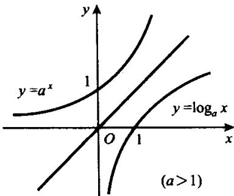
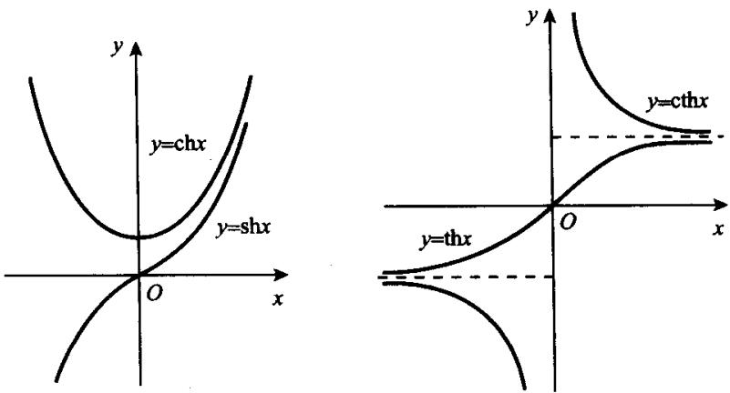

§1.1 实数
所有自然数的集合, 所有整数的集合, 所有有理数的集合和所有实数的集合分别为 和 . 众所周知, . 在中学数学中, 已经较为全面地接触到实数及其运算性质、序性质等. 现在, 我们把它们开列于下并不加证明地补充一些进一步的性质, 以作为本书内容的出发点.
- 实数的四则运算封闭性. 任何两个实数之间可以进行加、减、乘、除 (除数不为 0) 四则运算, 运算的结果和、差、积、商仍为实数.
- 实数的序性.
a) 对于任何两个实数 和 , 下列三种关系:
恰有一个成立.
b) 对于任何实数 ，若 ，则 ；若 ，则 。当条件为严格不等式时，结论也是严格不等式。
- 有理数和无理数在实数系中的稠密性. 任何两个不同的实数之间既有有理数又有无理数.
- 阿基米德(Archimedes)公理: 若 和 是两个正实数且 , 则必存在 , 使得 .
- 实数的连续性. 设 和 是 的两个子集, 满足条件 , , , 且对任何 , , 都有 , 则称 为 的一个分割. 对于 的任何分割, 都存在惟一的 , 使对所有 和 , 都有 . 这个性质称为戴德金 (Dedekind) 连续性公理.
这条公理说的是“实数没有空隙”.有理数不具备这种性质.
此外,关于实数系还有确界存在原理,将在下节给出.还有单调收敛定理、柯西收敛原理、区间套定理、有限覆盖定理和致密性定理等重要性质,将在第二、三章中陆续加以介绍.
实数可以和一条直线上的点一一对应,后者通常称为实数直线或实数轴.今后将经常用实数轴上的点来代表实数并在各种讨论中不加区别地使用.
设 和 是两个实数且 . 将集合 , , , 分别记为 并称之为区间. 称为开区间, 称为闭区间, 和 称为半开半闭区间. 此外, 引入记号 和 , 分别表示负无穷大和正无穷大, 简称为负无穷和正无穷.
对于任何 , 都有 . 注意, 和 只是记号而不是实数. 推广区间的概念, 把 和 都称为无穷区间. 和 是开区间, 和 是闭区间, 而 是既开又闭的区间.
§1.2 有界集
首先,我们来介绍有界集和无界集的概念.
定义 1.2.1 设集 .概念定义
定义 1.2.1 设集 .
- 若存在 , 使对任何 , 都有 , 则称集 是有上界的, 并称 为 的一个上界;
- 若存在 , 使对任何 , 都有 , 则称集 是有下界的, 并称 为 的一个下界;
- 既有上界又有下界的集合称为有界集.
例如,无穷区间 是有上界的.每个非负数都是它的上界.自然数集 是有下界的,所有不超过1的实数都是它的下界.区间 是有界集.0是它的一个下界,而1是它的一个上界.
显然,如果集 X 有上(下)界,则它有无穷多个上(下)界.
一个不是有上(下)界的集称为无上(下)界集.对此,还可正面给出定义如下:
定义1.2.2 设 .概念定义
定义1.2.2 设 .
- 若对任何 , 都存在 , 使得 , 则称集 是无上界的;
- 若对任何 , 都存在 , 使得 , 则称集 是无下界的;
- 无上界集和无下界集统称无界集.
例如,自然数集 N 是无上界集,Z 是既无上界又无下界的无界集.
其次,我们介绍两个今后经常用到的符号.如果集 X 中有最小元 m 或最
大元 ，则它们可分别记为
例如, 等等.但是 和 没有意义,因为它们不存在.所以 有两层意义:一是表示X的最小元存在;二是表示这个最小元. 的意义也与此类似.
设 为有界集, 于是存在下界 和上界 使对所有 , 都有
令 , 则对所有 , 都有
反之, 若存在 , 使对所有 , 都有
则 ，即 为 的一个下界而 为 的一个上界，从而 为有界集。这一点可以写成如下的定理。
定理1.2.1 集 为有界集的充分必要条件是存在 , 使对所有 , 都有 |核心定理
定理1.2.1 集 为有界集的充分必要条件是存在 , 使对所有 , 都有 .
当 为有限集时, 中既有最小元又有最大元. 但当 为无限集时, 就不一定有最小元和最大元了. 作为一个特例是无限集 中有最小元1. 当然, 的任何无限子集中也都有最小元. 这两条正是中学数学奥林匹克中常用的极端原理的理论基础.
下面, 我们来考察另一种无限集, 前面说过, 一个有上界的集合 有无穷多个上界, 这些上界所成的无限集称为 的上界集. 显然, 这个集合是有下界而无上界的. 它当然没有最大元, 问题在于它是否有最小元. 答案是肯定的.
定义1.2.3 (i)如果集 的上界集中有最小元, 则称之为集 的上确界, 记为 ;概念定义
定义1.2.3 (i)如果集 的上界集中有最小元, 则称之为集 的上确界, 记为 ;
- 如果集 的下界集中有最大元, 则称之为集 的下确界, 记为 .
定理1.2.2 任何有上界的非空集必有上确界.核心定理
定理1.2.2 任何有上界的非空集必有上确界.
证 设集 有上界 . 设 为 的上界集, 于是 B 证明
证 设集 有上界 . 设 为 的上界集, 于是 . 再令 , 于是 且 为 的一个分割. 从而由戴德金连续性公理知有惟一的 . 使对任何 和 , 都有
往证 为 的上界. 若不然, 则存在 使得 . 于是有
按定义知 不是 的上界，所以 由(1.2.1)式又有 ，此与(1.2.2)式矛盾。从而 为 的上界，即有 。
因为 ，且由(1.2.1)式知于任何 ，都有 ，故 为 中的最小元，即 为 的上确界。
同样地可以证明以下定理.
定理 1.2.2' 任何有下界的集必有下确界.核心定理
定理 1.2.2' 任何有下界的集必有下确界.
上面我们用戴德金连续性公理证明了定理1.2.2.事实上，若把定理1.2.2视为公理，则又可用它来证明戴德金连续性公理.
设 为 的任一分割，由定理1.2.2知 有上确界 . 按定义知对于任何 ，都有 . 又按分割定义知对于任何 都是 的上界，从而 .
若还有 ，使对任何 和 ，都有 。不妨设 ，于是
从而 既不能属于 也不能属于 ，矛盾.这就证明了满足要求的 的惟一性.
这表明戴德金连续性公理和定理1.2.2是等价的.实际上,许多书中就是不讲戴德金公理而直接把定理1.2.2作为公理的.以后我们将定理1.2.2称为确界存在原理.容易看出,这是前述的极端原理在包括连续无限集的情形的推广.
设 ，即 是集 的上确界，这有两层意义：第一， 是 的上界，即对所有 ，都有 ；第二， 是 的所有上界中最小的，即对任何 都不再是 的上界，亦即对任何 ，都存在 ，使得 。
反之, 如果 满足上述两个条件, 则 为 的最小上界, 即上确界.
定理1.2.3 为集 的上确界的充分必要条件是核心定理
定理1.2.3 为集 的上确界的充分必要条件是
- 对任何 , 都有 ;
- 对任何 ，都存在 ，使得 .
类似地,关于下确界有
定理1.2.4 为集 的下确界的充分必要条件是核心定理
定理1.2.4 为集 的下确界的充分必要条件是
- 对任何 , 都有 ;
- 对任何 ，都存在 ，使得 .
此外, 我们约定, 分别用 , 来表示集 无上界和无下界. 这是一种借用, 不能认为是上确界为 和下确界是 .
例1.2.1 设 . 求证 经典例题
例1.2.1 设 . 求证
所以,1 是 X 的一个上界.
此外，对于任给的 ，取 ，使得 ，于是有
又因 ，故有
令 ，则上式表明
由定理1.2.3知1是 的上确界，即有
另一方面,对于任何实数 , 令 , 于是有 . 故有
这表明 X 无下界,亦即有 .
例1.2.2 设 , 求证 \sup X = +\infty, \inf经典例题
例1.2.2 设 , 求证 .
证 对于任给的 , 取正偶数 , 于是有证明
证 对于任给的 , 取正偶数 , 于是有
按定义知集 无上界, 亦即有 .
另一方面，因为
所以,0 是集 X 的一个下界.
对于任给的 ，取正奇数 ，于是有
按定理 1.2.4 知 0 是集 X 的下确界, 亦即有 .
§1.3 函数
在中学数学中,我们所遇到的函数主要是下列六类函数以及由它们派生出来的一些较为复杂的函数.这常用的六类函数如下:
- 常数函数 ;
- 幂函数 ;
- 指数函数 ;
- 对数函数 ;
- 三角函数 ;
- 反三角函数 .
这六类函数统称为基本初等函数. 在本书中, 它们仍将是我们研究的主要对象.
这些函数的定义域各不相同, 变化规律也各不相同, 图形曲线的形状也各不相同, 但是它们却又有着共同的特点, 即对它们各自定义域中的每个 , 都是通过某个一定的、统一的法则对应于一个 值, 而且这个对应关系都可以写成一个统一的解析表达式. 实际上, 这正是函数概念出现以后相当长时间内人们对函数概念的认识.
“函数”一词是微积分的创始人之一莱布尼茨(Leibniz)最先使用的，并且把 的函数记为 等。但是，直到19世纪初，人们还是把函数理解为“变量和常数组成的解析表达式”。直到1834年，狄利克雷(Dirichlet)指出，函数 与变量 的关系不但不必用统一的法则在全区间上给出，而且可以不用解析式来给出。至此，函数的概念才被赋予了单值对应的意义。
定义1.3.1 设集 . 如果有一个从 到 的对应法则 , 使对每个x概念定义
定义1.3.1 设集 . 如果有一个从 到 的对应法则 , 使对每个 , 在对应法则 之下都有惟一的 与 对应, 则称这个对应法则 是 上的一个函数, 并称 为函数 的定义域, 称 为函数 的值域. 这时, 称为 的像, 而 称为 的原像. 函数 的定义域记为 . 是函数 的自变量, 是函数的因变量.
简单地说, 函数就是由定义域到它的值域的一个单值对应. 如果两个函数的对应关系一致而定义域不同, 则对应关系的适用范围也不同, 从而两个函数是不同的. 例如 , 和 , 就是两个不同的函数. 但显然二者之间又有着密切的联系, 函数 称为 在 上的限制, 而函数 称为 在 上的延拓. 一般地, 若有 , , , , 且在 上, , 则称 为 在 上的延拓, 称 为 在 上的限制.
下面给出几个初等数学中未曾出现过的但在数学分析中颇为常用的函数的例子.
例1.3.1 设集 , 令经典例题
例1.3.1 设集 , 令
则得到一个函数 ，它的定义域是 . 而当 非空且又不是整个 时，它的值域是 .
函数 称为集 的特征函数. 特别地, 当 时, 特征函数 称为狄利克雷函数, 记为 . 这时有
称为符号函数. 显然, 对任何 , 都有
如果令 ，则有
即符号函数 可以写成两个特征函数之差.
一般地,有限多个特征函数的线性组合
称为阶梯函数, 其中 都是实常数, 是 R 的 n 个子集. 特别地, 当 恰为一个有限闭区间所划分成的 n 个小区间时, 所表达的阶梯函数正是定积分中所常用的近似函数.
称为黎曼(Riemann)函数.
和 都是画不出精确的函数图形的, 但它们的单值对应关系是明确的, 所以它们都是名符其实的函数.
也是一个有用的函数,我们将在第四章中再遇到它.
仅当 时才有意义, 所以它的定义域是 , , 值域为 .
顺便指出,以后遇到的初等函数或更一般的由解析表达式给出的函数时,大多数都不指出定义域.这时就理解函数的定义域是使函数表达式有意义的所有 x 所组成的实数集,就像例 1.3.5 中那样.
当然还可以把它改写成
显然，(1.3.2)式左端是 的严格递增函数而右端是 的严格递增函数且值域都是 . 因此，对于每个 ，都可求得惟一的 使(1.3.1)式成立. 这就建立了一个从 到 的单值对应. 按定义知，这就确定了一个函数 . 这个函数就称为由方程(1.3.1)确定的隐函数.
一般地,设有方程
如果能够在实数集 上, 在关于 的某些限制之下, 使对每个 , 都能惟一地确定一个 值使(1.3.3)式成立, 则就令这个 与 对应. 从而确定了一个函数 , 满足
于是就称函数 为由方程(1.3.3)所确定的隐函数. 相对地, 以前由解析表达式给出的函数 则称为显函数.
对于隐函数,有时可以解出明显表达式而化成显函数,有时则无法解出.例如,方程(1.3.1)所确定的隐函数就无法解出,而椭圆方程
在限制条件 和 之下可分别解出两个隐函数
这里,我们只是给出了隐函数的定义并举例说明了它确实能存在.但隐函数究竟在什么条件下存在则没有指出,也不可能指出.关于这一点,将在多元函数微分学中做进一步的研究.
考察曲线的参数方程
显然, 对于每个 , 都有惟一的 和惟一的 与 对应. 就令这个 与这个 对应. 当然, 一般来说这个对应不一定是单值的. 但如果这个对应是单值的或加上某些条件后是单值的, 则就又确定了一个从 到 的函数 , 称函数 为由参数方程(1.3.5)定义的函数.
例如,椭圆的参数方程为
当 时，由 可得 . 再将此代入方程(1.3.6)中第2式，得到显函数
这一结果与前段作为隐函数解出的结果是一致的.
§1.4 各种常用函数类
在中学数学中, 已经遇到过许多种类的函数, 例如单调函数、奇函数和偶函数以及周期函数等. 在数学分析中仍将不断地遇到它们, 故此复述如下.
- 单调函数 设函数 于某区间 上有定义. 如果对于任何 , 都有
则称函数 在区间 上是递增(递减)函数. 如果(1.4.1)式中为严格不等号, 则称函数 在区间 上是严格递增(严格递减)函数.
递增函数和递减函数统称单调函数,严格递增函数和严格递减函数统称为严格单调函数.
例如, 是 上的严格递增函数, 是 上的严格递减函数,符号函数 是 上的递增函数.在本书的第五章,我们将使用微分学工具给出单调函数的判定方法.
- 奇函数与偶函数 如果函数 的定义域是关于原点对称的区间或关于原点对称的更一般的集 (例如可为若干个区间之并), 且对任何 , 都有
则称函数 为奇(偶)函数. 易见, 奇函数的图形关于原点中心对称, 而偶函数的图形关于 轴对称.
对于 , 函数 当 为奇数时是奇函数, 当 为偶数时是偶函数. 和 都是奇函数, 也是奇函数; , , 都是偶函数.
(iii) 周期函数 凡是能使等式
对所有 恒成立的函数 称为周期函数, 其中的常数 称为函数 的周期.
正弦函数 和余弦函数 都是以 为周期的周期函数. 显然, 等也是它们的周期, 但 是它们的最小正周期. 也都是周期函数, 它们的最小正周期为 . 也是周期函数, 它的最小正周期为 1. 通常所说周期函数的周期就专指它的最小正周期. 但是, 并不是每个周期函数都有最小正周期. 例如, 对于狄利克雷函数 , 每个有理数 都是它的周期, 它当然没有最小正周期.
此外,在数学分析中经常用到的函数类还有有界函数,反函数和复合函数.
- 有界函数与无界函数 设函数 的定义域是 , 值域是 . 如果实数集 有上界(下界), 称函数 有上界(下界); 如果函数 的值域 是有界集, 则称 为有界函数; 如果 是无界集, 则称 为无界函数.
由定理1.2.1知，函数 为 上的有界函数的充分必要条件是存在 ，使对所有 ，都有
例如, 正弦函数 和余弦函数 都是有界函数; 函数 在 上是无界函数, 但是它是有下界的函数; 对数函数 是 上的无界函数. 此外, 和 都是有界函数.
如果函数 在 上有上界，即 有上界，则由定理1.2.2知它有上确界 ，称为 在 上的上确界，记为
类似地称 的下确界(如果存在)为函数 在 上的下确界, 记为
如果函数 的值域 存在最大元或最小元, 则分别称为函数 在 上的最大值和最小值, 分别记为
为方便起见,有时也借用 和 来分别表示函数 于X上无上界和无下界.
- 反函数 如果函数 是定义域 上的严格递增函数, 则对任何 , 都恰有一个 , 使得 . 当 为严格递减函数时, 情况也是如此.
一般地, 设函数 的定义域为 , 如果对于任何 , 都恰有一个 , 使得 , 则就确定了一个由 到 的单值对应. 按定义, 这就确定 为 的函数, 称为函数 的反函数, 记为 . 但也可以按习惯把自变量写成 而因变量写成 , 即写成 . 它的定义域是 而值域是 . 于是有
例如, 考察定义在 中的函数 , 它的反函数是 . 这时有
当 为区间 上的严格单调函数时，它当然有反函数 ，但当 不是严格单调函数时，也可能有反函数。例如函数
它不但不是严格单调函数,而且它的图形也无法明确画出来.但是, 有反函数而且反函数就是它自身,即 .
关于反函数的存在性,我们有如下的定理.
定理1.4.1 设函数 在区间 上严格递增(递减)且当以 为定义域时, 函数 的值域是 , 则必存在核心定理
定理1.4.1 设函数 在区间 上严格递增(递减)且当以 为定义域时, 函数 的值域是 , 则必存在反函数 , 它在 中有定义且也是严格递增(递减)的.
证 对于任何 , 因为 为 的值域, 故有 , 使得 . 若还有 x' \证明
证 对于任何 , 因为 为 的值域, 故有 , 使得 . 若还有 , 使得 , 则有 , 此与函数 的严格递增性矛盾. 故知满足条件 的 是惟一的, 即对应 是单值的. 从而函数 存在.
对于任何 , 记
若 , 则由函数 的严格递增性可得 , 即 , 矛盾. 故必有 , 即反函数 也是严格递增的.
- 复合函数 设函数 的定义域是 , 函数 的定义域是 . 对于 , 如果 , 则可按如下的对应法则得到惟一的实数 :
这个对应法则所确定的函数就称为函数 与 的复合函数，记为 . 这时， 的定义域是 . 当 属于这个定义域时， .
可以看出,复合函数 的定义域是 g 的定义域 X 的一个子集.当 非空时,复合函数 才有意义.
这里,我们仅仅给出了两个函数的复合函数的定义,类似地可以定义3个乃至更多个函数的复合函数.
例1.4.1 设 ，则有经典例题
例1.4.1 设 ，则有
易见, 复合函数 与 是两个不同的函数, 这表明复合函数是不能交换次序的.
例1.4.2 设 , 于是 D(f) = (-\infty,经典例题
例1.4.2 设 , 于是 , 按定义有
表面上看, 这两个函数似乎是相同的, 但是, 它们的定义域不同, 而 . 这表明二者不是同一个函数. 实际上, 二者只不过是函数 在不同子集上的限制而已.
例1.4.3 设 . 则有经典例题
例1.4.3 设 . 则有
其中的 分别表示 6 个复合函数的定义域.
§1.5 初等函数
在 §1.3 中已经指出, 常数函数, 幂函数, 指数函数, 对数函数, 三角函数

image
和反三角函数统称为基本初等函数. 从它们出发, 经过有限多次加、减、乘、除和复合运算所能得到的所有函数统称为初等函数. 为了今后更好地研究初等函数的较为深刻的性质, 本节就把基本初等函数的性质复习一下并介绍一些常用的初等函数.
图1.5.1
图1.5.1 1. 常数函数 ，其中 为常数，定义域为 如图1.5.1所示，是一条过点 且平行于 轴的直线。
它具有许多优秀的性质: 它在整个定义域上既是递增函数又是递减函数; 它又是偶函数, 有界函数, 又是没有最小正周期的周期函数. 而且, 随着本书内容的展开, 读者还会了解它的深层次的优秀性质.
- 幂函数 . 其图形都是一条单调变化的曲线，如图1.5.2.

image
当 为正整数时，幂函数 的定义域为 ；当 为负整数时，幂函数 的定义域为 ；当 时， 在点 处没有意义，故不能用它来代替常数函数。恰恰相反，正因为有了常数函数，所以在幂函数中不包括
图1.5.2
对于一般的 ，当 时，总认为 的定义域是 ；当
时， 的定义域为 .
当 为奇数时, 为奇函数; 当 为偶数时, 为偶函数. 当 时, 为严格递增函数; 当 时, 为严格递减函数. 函数 与 互为反函数.
- 指数函数 ，其定义域为 且图形如图1.5.3所示.
当 时， 为严格递增函数；当 时， 为严格递减函数.
- 对数函数 ，其定义域为 ，其图形如图1.5.4所示.

image
图1.5.3

image
图1.5.4
对数函数是指数函数的反函数, 其单调性与指数函数相同. 当 a > 1 时, 严格递增; 当 a < 1 时, 严格递减.
- 三角函数 和 的定义域都是 , 且二者都是以 为周期的周期函数, 都是有界函数且最大值都是 1, 最小值都是 -1.
和 都是以 为周期的周期函数且有 . 的定义域是 ; 的定义域是 .
和 也都是以 为周期的周期函数.
三角函数的图像是大家熟知的,这里不再重复.三角函数之间有许多非常有用的公式,这里我们仅开列其中的一部分:
(i) ; (ii) ;
(iii) ; (iv) ;
(v) ; (vi) ;
- ;
-
- 反三角函数 ，其中反正弦函数与反余弦函数的定义域是 ，而反正切函数与反余切函数的定义域是 .
函数 和 都是严格递增函数，而函数 和 都是严格递减函数。它们之间有如下公式：
在初等函数中,特别值得一提的就是双曲函数,在第六章的换元积分法中,常常要用到它们.
双曲函数定义如下：
这4个函数分别称之为双曲正弦、双曲余弦、双曲正切和双曲余切.由定义直接看出，shx,thx,cthx都是奇函数而chx是偶函数(如图1.5.5).
从双曲函数的定义出发,可以导出许多类似于三角函数的恒等式.例如有

image
图1.5.5
由定义直接看出, 是 上的严格递增函数,而 的最小值是1.当 时,由上面公式有
这表明 是 上的严格递增函数. 再由 为偶函数知, 是 上的严格递减函数. 因此, 有统一的反函数而 的反函数要分两部分来求.
令
于是得到关于 的一元二次方程
解得
当 时，(1.5.1)式中的负号导致(1.5.2)式根号中的正号。这时根号外面负号导致右端为负，舍去，于是得到 的反函数为
当 时，(1.5.2)式根号中为负号，这时两个根都有意义。恰导出两部分的反函数：
由于
所以对于同一个 值, 与 的值互为相反数. 由于 是偶函数, 当然应有这样的结果.
习题 习题 1
- 设 且对任何 , 都有 , 求证 .
- 设 是无限集, , 且对任何 , 都有 , 求证集 是无界集.
- 证明下列集合无界：
-
- .
- 证明下列数集有界：
- ;
- .
- 举例说明存在分别满足下列各种要求的集合：
- 有上确界无下确界的数集；
- 上下确界都存在且含有上确界但不含有下确界的数集；
- 既含有上确界又含有下确界的无穷集合；
- 上下确界都存在但却都不在集内的集合.
- 设 且对任何 , 都存在 , 使得 , 求证 .
- 设 且对任何 和 , 都有 , 求证 .
- 设 为有界集, 定义 , 求证 .
- 设集 和 的上下确界都存在且 . 求证 .
- 设 和 是两个有界集, 定义 , 求证:
- ;
- .
- 设 和 是两个有界非负实数集, 定义 , 求证:
- ;
- .
- 求下列各数集的上下确界：
- ;
-
- 求证两个偶函数之积是偶函数, 两个奇函数之积也是偶函数, 一个奇函数与一个偶函数之积是奇函数.
- 求证定义在 上的任何函数都可以表示成一个偶函数与一个奇函数之和.
- 证明下列各函数在给定区间上有界：
-
-
- 求证函数 在任何形如 的开区间中都无界，其中 .
- 求下列各组函数的复合函数 和 ，并指出它们的定义域：
-
- , ;
- 求下列各函数的定义域：
- ; (ii) ;
- ;
- ;
- .
- 求函数
的反函数.
- 把函数 延拓到整个实轴上去，使之成为周期为 2 的偶函数.